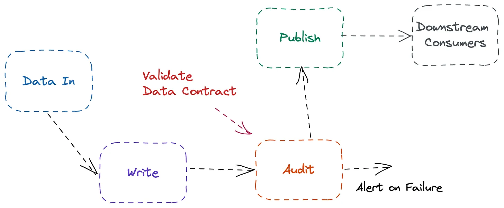
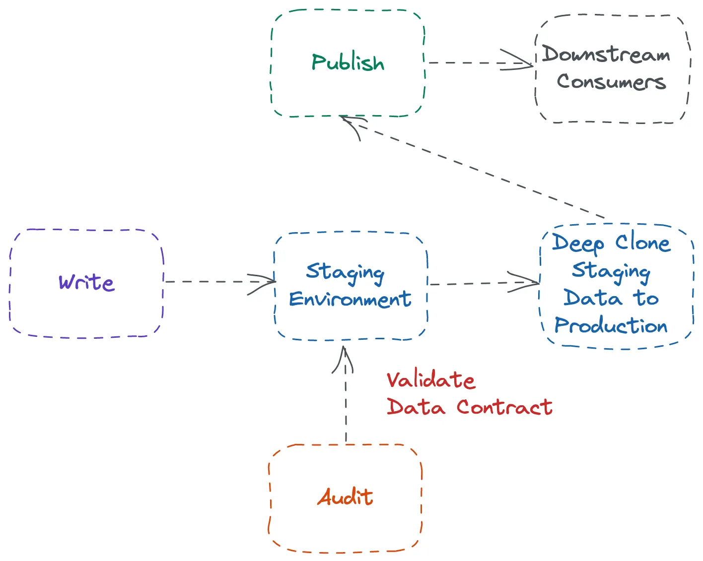
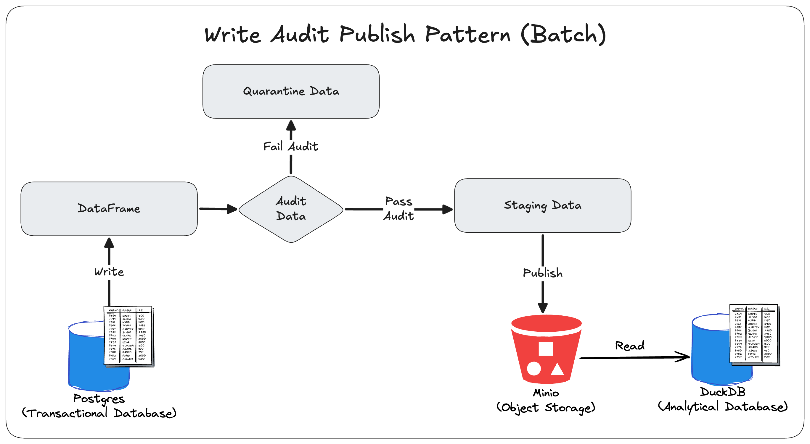

Data Validation
Misc
- Also see
- Packages
- {pointblank} - This is a heavy-duty package that helps you validate all aspects of datatsets with extensive reporting capabilities.
- {validate} (Ebook)- Data Validation Infrastructure
- Declare data validation rules and data quality indicators; confront data with them and analyze or visualize the results.
- {dataquieR} (JOSS) - Designed for observational data in healthcare or epidemiological studies or studies in other social sciences (e.g. economics). Enables extensive, highly standardized, and accessible data quality assessments related to data integrity (such as data type errors or duplicates), completeness (for example, missing values), consistency (for instance, range violations or contradictions), and accuracy (such as time trends or examiner effects) on tabular form data.
- {data.validator} - A package for scalable and reproducible data validation
- Functions for validating datasets in
%>%pipelines:validate_if,validate_colsandvalidate_rows - Predicate functions from assertr package, like
in_set,within_bounds, etc. - Functions for creating user-friendly reports that you can send to email, store in logs folder, or generate automatically with RStudio Connect.
- Functions for validating datasets in
- {assertr} - Supplies a suite of functions designed to verify assumptions about data early in an analysis pipeline so that data errors are spotted early and can be addressed quickly.
- {schematic} - Validates a data.frame against a schema. It’s designed to provide clear and expressive error messages that help users understand and fix data issues.
- {great_expectations}
- {pydantic}
- {cuallee} (JOSS) - Data quality checks across multiple DataFrame APIs (e.g. snowflake, databricks, duckdb, bigquery, pandas, polars, daft). Faster than {great_expectations}
- Also see DB, Engineering >> Data Quality
Design Patterns
Misc
- Notes from Data Quality Design Patterns
WAP (Write–Audit–Publish)

See An Engineering Guide to Data Quality - A Data Contract Perspective - Part 2 for implementing this pattern for streaming data
Process:
- Write: Write new data into a staging or temporary area
- Audit: Run quality checks and validation rules
- Publish: Promote the data to production only if it passes
Load new data into a safe, temporary area, check whether it’s valid, and only then make it available to production.
The temporary area is like a staging area in an ETL pipeline, except in this pattern that staging area is an isolated environment that protects downstream resources from bad data.
There is a controlled gate where new data is written to a temporary location, audited with quality checks, and only promoted to production if it passes. If it fails, it’s quarantined for review instead of corrupting production.
Two-Phase WAP
- Requires two physical copies of the table:
- Write: Write new data to a staging table.
- Audit: Validate the staged data.
- Publish: If valid, copy it into the production table.
- After publishing, staging is cleared out
- Requires two physical copies of the table:
One-Phase WAP (Zero-Copy WAP)
- Modern lakehouse table formats allow WAP without copying data and support transactional branching or hidden snapshots
- e.g. Iceberg enables WAP simply through table properties like:
write.wap.enabledwap.id
- e.g. Iceberg enables WAP simply through table properties like:
- Write and Audit phases occur on an isolated snapshot or branch, and the Publish step is just a metadata commit, no deep copy required
- Modern lakehouse table formats allow WAP without copying data and support transactional branching or hidden snapshots
Example: {pandas} (source)
Code
import pandas as pd import glob import duckdb ### Collect all CSV files in the directory files = glob.glob('sales_data_*.csv') ### Buffer to temporarily store data from each file data_frames = [] for file in files: df = pd.read_csv(file) data_frames.append(df) ### Combine all data into a single DataFrame combined_data = pd.concat(data_frames, ignore_index=True) ### Filter out rows with missing 'sales_amount' clean_data = combined_data.dropna(subset=['sales_amount']) ### Filter out rows with negative 'sales_amount' clean_data = clean_data[clean_data['sales_amount'] >= 0] ### Connect to DuckDB conn = duckdb.connect(database=':memory:', read_only=False) if not clean_data.empty: clean_data.to_sql( 'cleaned_sales_data', conn, if_exists='replace', index=False ) print(f"Inserted {len(clean_data)} rows into DuckDB.") else: print("No data passed the audit.")Example: Snowflake’s Zero-Copy Clone (source)
- Allows pipelines to create full copies of tables or schemas instantly without duplicating storage
- Write:
- Transform all data into a development or staging schema (e.g.,
RAW_WAP). - Run dbt models in this “sandbox” schema.
- Transform all data into a development or staging schema (e.g.,
- Audit:
- Run dbt tests or Snowflake-native quality checks on the cloned assets.
- Nothing touches production until tests are green.
- Publish:
- If validation passes, use a zero-copy clone to promote the staged tables into the production schema.
- Promotion is nearly instantaneous because only metadata pointers change
Example: Iceberg’s Branching Mechanism
- Write:
- Create a branch off the main table:
CREATE BRANCH feature_run_123 FROM main - Run transformations directly on that branch, not on the main dataset.
- Create a branch off the main table:
- Audit:
- Run DQ tests, checks, or manual inspection on the branch.
- The branch reflects a full versioned snapshot of the data.
- Publish:
- If everything passes, “fast-forward” the branch into
main.- This is atomic and consistent across all related tables.
- If tests fail, simply delete the branch and start again
- If everything passes, “fast-forward” the branch into
- Write:
Example: Python, Avro Templates, PostgreSQL (source)
Code
import fastavro import json import logging import os from data_platform.etl.batch_postgres_minio_etl import BatchPostgresMinioETL class BatchPostgresMinioWriteAuditPublishETL: def __init__(self, bucket_name: str, schema_directory: str): self.logger = logging.getLogger(__name__) self.bucket_name = bucket_name self.schema_directory = schema_directory self.etl = BatchPostgresMinioETL(schema_directory) def run_wap(self): tables = self.etl._get_public_tables() self.logger.info(f"Starting Write-Audit-Publish for {len(tables)} tables: {tables}") for table in tables: self.logger.info(f"Preparing staging and quarantine tables for '{table}'") self._create_quarantine_table(table) self._create_staging_table(table) data, columns = self.etl.extract(table) schema = self.etl._infer_avro_schema(table) primary_key = self._get_primary_key(table) self.logger.info(f"Extracted {len(data)} rows from '{table}'") for row in data: record = dict(zip(columns, row)) record = self.etl._convert_timestamps_to_millis(record) try: fastavro.validate(record, schema) except Exception: self._insert_into_quarantine(table, record, primary_key) self.logger.info(f"Populating staging table: '{table}'") self._populate_staging_excluding_quarantine(table, primary_key) self.logger.info(f"Finished '{table}'") self.logger.info("Write-Audit-Publish run complete") def run_etl(self): tables = self._get_staging_tables() self.logger.info(f"Starting ETL for {len(tables)} tables: {tables}") for table in tables: self.logger.info(f"Processing table: {table}") data, columns = self.etl.extract(table) # use base-table schema for transform logical_name = table for prefix in ("staging_", "quarantine_"): if logical_name.startswith(prefix): logical_name = logical_name[len(prefix):] break transformed_data = self.etl.transform(data, columns, logical_name) # keep MinIO object name as the staging/quarantine table self.etl.load(transformed_data, self.bucket_name, table) self.logger.info(f"Successfully processed table: {table}") self.logger.info("ETL run complete") # def run(self): # self.run_etl() # self.run_wap() # Quality Checks def avro_compatibility_check(self, table_name, record, schema, primary_key): try: fastavro.validate(record, schema) except Exception: self._insert_into_quarantine(table_name, record, primary_key) ######################################### # ADD MORE QUALITY CHECK FUNCTIONS HERE # ######################################### # Utility Functions def _get_primary_key(self, table_name): schema_file = os.path.join(self.schema_directory, f"{table_name}.json") with open(schema_file, 'r') as f: schema = json.load(f) # Look through the columns array to find the one with primary_key: true for column in schema.get('columns', []): if column.get('primary_key', False): return column['name'] return None # No primary key found def _create_quarantine_table(self, table_name): primary_key = self._get_primary_key(table_name) query = f""" CREATE TABLE IF NOT EXISTS quarantine_{table_name} ( LIKE {table_name} INCLUDING DEFAULTS INCLUDING CONSTRAINTS INCLUDING INDEXES ); CREATE UNIQUE INDEX IF NOT EXISTS idx_quarantine_{table_name}_{primary_key} ON quarantine_{table_name} ({primary_key}); """ self.etl.postgres.execute_query(query) def _create_staging_table(self, table_name): primary_key = self._get_primary_key(table_name) query = f""" CREATE TABLE IF NOT EXISTS staging_{table_name} ( LIKE {table_name} INCLUDING DEFAULTS INCLUDING CONSTRAINTS INCLUDING INDEXES ); CREATE UNIQUE INDEX IF NOT EXISTS idx_staging_{table_name}_{primary_key} ON staging_{table_name} ({primary_key}); """ self.etl.postgres.execute_query(query) def _insert_into_quarantine(self, table_name, record, primary_key): primary_value = record[primary_key] query = f""" INSERT INTO quarantine_{table_name} SELECT * FROM {table_name} WHERE {primary_key} = '{primary_value}' ON CONFLICT ({primary_key}) DO NOTHING """ self.etl.postgres.execute_query(query) def _populate_staging_excluding_quarantine(self, table_name, primary_key): query = f""" INSERT INTO staging_{table_name} SELECT {table_name}.* FROM {table_name} LEFT JOIN quarantine_{table_name} ON quarantine_{table_name}.{primary_key} = {table_name}.{primary_key} WHERE quarantine_{table_name}.{primary_key} IS NULL ON CONFLICT ({primary_key}) DO NOTHING; """ self.etl.postgres.execute_query(query) def _get_staging_tables(self): self.logger.info("Querying PostgreSQL for staging tables") query = """ SELECT table_name FROM information_schema.tables WHERE table_schema = 'public' AND table_name LIKE 'staging_%' """ data, _ = self.etl.postgres.execute_query(query) if not data: raise ValueError("No tables found in postgres") table_names = [row[0] for row in data] return table_namesExamples: dlt, Airflow, and dbt
- dlt (source)
- Data is first extracted and written to a temporary location, then loaded into a dataframe for auditing, and finally written again to the destination after validation.
- Airflow (source)
- WAP is handled at the DAG level. Airflow manages the conditional logic and control flow, while the storage/compute layer performs the actual data reads, audits, and writes.
- dbt (source)
- The
sdf buildcommand abstracts the full WAP workflow by providing:- Creates
_drafttables for all transformations. - Runs dbt tests and validations against the staged data.
- Publish validated data to production without re-running the transformations.
- Incremental models and snapshots work efficiently without losing performance.
- Creates
- The
- dlt (source)
{kind=link}
{kind=link}
{kind=link}
AWAP (Audit–Write–Audit–Publish)

- Includes additional validation logic to perform lightweight verification on the incoming dataset before further processing
- Benefits
- Tries ensure high data quality by checking both the input and output datasets via catching errors from sources and transformations,
- Works for both batch and streaming pipelines.
- Drawbacks
- Requires higher compute and storage costs,
- Adds pipeline complexity and potentially redundant checks
- Possible streaming delays
- Not completely foolproof since rules can become outdated or trigger false positives
- Process
- First Audit (Input Validation):
- Validate the incoming raw data before any extraction.
- Checks may include:
- File format validation (CSV, JSON, Parquet, etc.)
- Schema verification (columns present, correct types)
- Basic metrics like row count, file size, or table size
- Goal: Catch obvious issues early, e.g., missing columns or corrupted files, before spending compute in the further process.
- Write / Transform
- Apply transformations to the data and/or write it to a staging or intermediate location.
- This step is similar to the WAP “Write” step, where we prepare production-ready data while keeping it separate from the live environment.
- Second Audit (Output Validation)
- Validate the transformed data to ensure transformations didn’t introduce errors.
- Checks may include:
- Row-level validations (e.g., no NULLs where not allowed)
- Business rules (e.g., totals, ratios, unique constraints)
- Aggregate metrics (e.g., distinct count, sum, averages)
- Goal: Ensure the transformed dataset meets production standards and business expectations.
- Publish (Promote to Production)
- Only after both audit steps pass:
- Move the validated data to the production environment (Data Lake, Warehouse, or Lakehouse).
- Optionally, create backups of previous production tables for safety.
- Only after both audit steps pass:
- First Audit (Input Validation):
TAP (Transform–Audit–Publish)

- A simpler and more cost-effective alternative to WAP
- With TB-scale datasets in object stores like S3 or table formats like Delta/Iceberg, WAP’s extra I/O operations quickly become expensive.
- Every read, write, and extra file increases storage and metadata overhead, making WAP costly in modern lakehouses designed for object storage rather than traditional warehouses.
- Process
- Perform data quality checks directly in-memory during transformation.
- The validated data is then written straight to production, eliminating unnecessary intermediate storage and reducing cloud I/O costs.
Signal Table Pattern

- Trades some safety guarantees for simplicity and speed, while WAP prioritizes data quality and reliability over immediate availability.
- Process
- Write directly to the production table.
- Run our audits on production.
- If they pass, publish a signal that lets the downstream know the data is ready
- Benefits
- Simpler to implement since there’s no staging table or partition exchange step.
- Faster data availability, reducing latency and helping meet SLAs.
- Drawbacks
- Ad hoc queries on production data can see bad or incomplete data if analysts ignore the signal table.
- Less intuitive, as downstream consumers must explicitly wait for the signal table instead of relying on the production table itself.
- Bad data propagation is possible if the contract is violated, leading to costly fixes
Pipeline
- Collection
- e.g. people working in your stores, your call centrrs or perhaps as online support agents. It could be your online sign-up forms or physical documents that your agents must manually input into your systems
- Checks
- Completeness: The data being collected and captured is complete (not NULLs), i.e. all mandatory fields have information added, and it is not missing any key data points.
- Uniqueness: The data is kept as unique as possible, i.e. if a client already has an account, another account is not being set up. If the mobile number already exists in the system, the current order is linked to the old order etc.
- Validity: The data being captured conforms to the corporate standards, i.e. account number is eight digits long and starts with a number 9 is conformed with at the time of capturing
- Transfer
- Make sure that the data sent is the same as the data received
- Check
- Consistency: The data is consistent across all the tables with the same values. This could translate to well-reconciled data between source and target, i.e. 100 records sent, 100 records received. Or that the table has specific values like date of birth and is consistent with other tables that have the same or similar information. Orphaned records (exist in A and not in B) should be highlighted, monitored and remediated.
- Storage
- Data spends most of its time here, so take advantage of the time that it’s not being used in a product.
- Checks
- Completeness: Null reporting — how many columns are Null, and why are they Null? Can we change the data capture process to avoid these Nulls coming through?
- Uniqueness: Are non-mandatory attributes unique? Are duplications going to impact downstream reporting?
- Transformation
- Often the place where most validation takes place.
- Checks
- Timeliness: Ensure data is available promptly to meet agreed SLAs.
- Consistency: Reconciliation checks from source to target
- Example: tolerance checks on tables processed; we generally receive 100 records, and we have received just two records today; how do we alert the user of this discrepancy?
- Validity: Non-conformance under the validity dimension could render the transformation and subsequent consumption useless. This is especially helpful when data capture doesn’t have robust controls.
- Consumption
- Ensure the business problem is solved
- Checks
- Accuracy: The data is accurate enough for reporting, such as board metrics. Account numbers are associated with the correct customer segments, or the date of birth is not the default value like 01/01/1901.
- Timeliness: It is not early that it excludes some recent records. It is not late that it misses the deadline for reporting. All agreed SLAs must be met to ensure the data consumption layer has the data available when required and stays fit for purpose.
Python
- Misc
- Comparison between {pydantic} and {pandas_dq}
- Declarative syntax: arguably, Pydantic allows you to define the data schema and validation rules using a more concise and readable syntax. This can make it easier to understand and maintain your code. I find it super helpful to be able to define the ranges of possible values instead of merely the data type.
- Built-in validation functions: Pydantic provides various powerful built-in validation functions like conint, condecimal, and constr, which allow you to enforce constraints on your data without having to write custom validation functions.
- Comprehensive error handling: When using Pydantic, if the input data does not conform to the defined schema, it raises a ValidationError with detailed information about the errors. This can help you easily identify issues with your data and take necessary action.
- Serialization and deserialization: Pydantic automatically handles serialization and deserialization of data, making it convenient to work with different data formats (like JSON) and convert between them.
- Comparison between {pydantic} and {pandas_dq}
- Example: {pydantic}
Set schema and create sample data
# data validation on the data dictionary from pydantic import BaseModel, Field, conint, condecimal, constr class LoanApplication(BaseModel): Loan_ID: int Gender: conint(ge=1, le=2) Married: conint(ge=0, le=1) Dependents: conint(ge=0, le=3) Graduate: conint(ge=0, le=1) Self_Employed: conint(ge=0, le=1) ApplicantIncome: condecimal(ge=0) CoapplicantIncome: condecimal(ge=0) LoanAmount: condecimal(ge=0) Loan_Amount_Term: condecimal(ge=0) Credit_History: conint(ge=0, le=1) Property_Area: conint(ge=1, le=3) Loan_Status: constr(regex="^[YN]$") # Sample loan application data loan_application_data = { "Loan_ID": 123456, "Gender": 1, "Married": 1, "Dependents": 2, "Graduate": 1, "Self_Employed": 0, "ApplicantIncome": 5000, "CoapplicantIncome": 2000, "LoanAmount": 100000, "Loan_Amount_Term": 360, "Credit_History": 1, "Property_Area": 2, "Loan_Status": "Y" } # Validate the sample data using the LoanApplication Pydantic model loan_application = LoanApplication(**loan_application_data)Validate and print report
# data validation on the data dictionary from pydantic import ValidationError from typing import List # Function to validate DataFrame and return a list of failed LoanApplication objects def validate_loan_applications(df: pd.DataFrame) -> List[LoanApplication]: failed_applications = [] for index, row in df.iterrows(): row_dict = row.to_dict() try: loan_application = LoanApplication(**row_dict) except ValidationError as e: print(f"Validation failed for row {index}: {e}") failed_applications.append(row_dict) return failed_applications # Validate the entire DataFrame failed_applications = validate_loan_applications(df_loans.reset_index()) # Print the failed loan applications or "No data quality issues" if not failed_applications: print("No data validation issues") else: for application in failed_applications: print(f"Failed application: [{application}]{style='color: #990000'}")
- Example: {pandas_dq}
Check schema

from pandas_dq import DataSchemaChecker schema = { 'Loan_ID': 'int64', 'Gender': 'int64', 'Married': 'int64', 'Dependents': 'int64', 'Graduate': 'int64', 'Self_Employed': 'int64', 'ApplicantIncome': 'float64', 'CoapplicantIncome': 'float64', 'LoanAmount': 'float64', 'Loan_Amount_Term': 'float64', 'Credit_History': 'int64', 'Property_Area': 'int64', 'Loan_Status': 'object' } checker = DataSchemaChecker(schema) checker.fit(df_loans.reset_index())- Shows 3 variables with incorrect types
Fix issues

df_fixed = checker.transform(df_loans.reset_index()) df_fixed.info()- Variables have been cast into the correct types according to the schema
{pointblank}
- Python
Example: (source)
import pointblank as pb import polars as pl salesforce_data = pl.read_csv("salesforce_leads_snowflake.csv") def log_error(): """Custom action to log validation errors""" metadata = pb.get_action_metadata() print(f"❌ ERROR: Critical validation failure in step '{metadata['step']}'!") def validate_salesforce_data( data: pl.DataFrame, tbl_name: str = "Salesforce", label: str = "Lead Data", ) -> pb.Validate: validation = ( pb.Validate( data=data, tbl_name=tbl_name, label=f"{tbl_name} {label}", thresholds=pb.Thresholds(0.01, 0.02, 0.05), actions=pb.Actions(error=log_error), brief=True, ) .col_vals_not_null( columns=pb.ends_with("_id") ) .col_vals_not_null( columns=pb.ends_with("_name") ) .col_vals_not_null( columns="company" ) .col_vals_regex( columns="email", pattern="^[a-zA-Z0-9._%+-]+@[a-zA-Z0-9.-]+\\.[a-zA-Z]{2,}$" ) .col_vals_between( columns=["opportunity_value", "lead_score"], left=0, right=100 ) .rows_distinct(columns_subset="lead_id") .col_vals_gt( columns=["annual_revenue", "employees"], value=0 ) .col_vals_in_set( columns="lead_source", set=["Web", "Event", "Social Media"] ) # Removed the redundant .col_vals_in_set for lead_source .interrogate() ) return validation validation_result = validate_salesforce_data(data=salesforce_data_clean) print("Above error threshold?", validation_result.above_threshold(level="error")) if validation_result.above_threshold(level="error"): print("RAISING ERROR NOW!") raise ValueError("VALIDATION FAILED - STOPPING RENDER!")